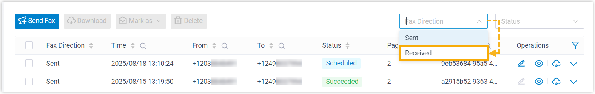
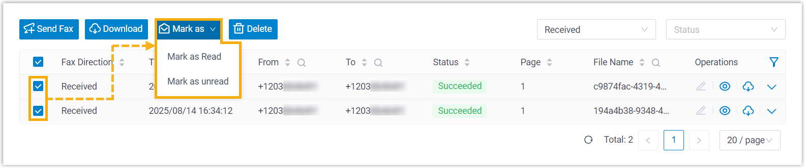

Update Read Status of Inbound Faxes
When inbound faxes reach your extension, they are marked with an unread badge in Linkus. If you preview or download a fax, it will be automatically marked as read. In case of need, you can manually change the read status, and the updates will be synchronized to your Linkus Web Client.
Limitations
Only the read status of inbound faxes can be modified.
Procedure
- Log in to Linkus Desktop Client, go to .
- Optional: At the top of the list, set Fax
Direction to Received to filter the
inbound faxes.

- Select the checkboxes of the desired faxes, click Mark
as, then select an option to change the read
status.

Result
The read status of the selected inbound faxes is updated accordingly.